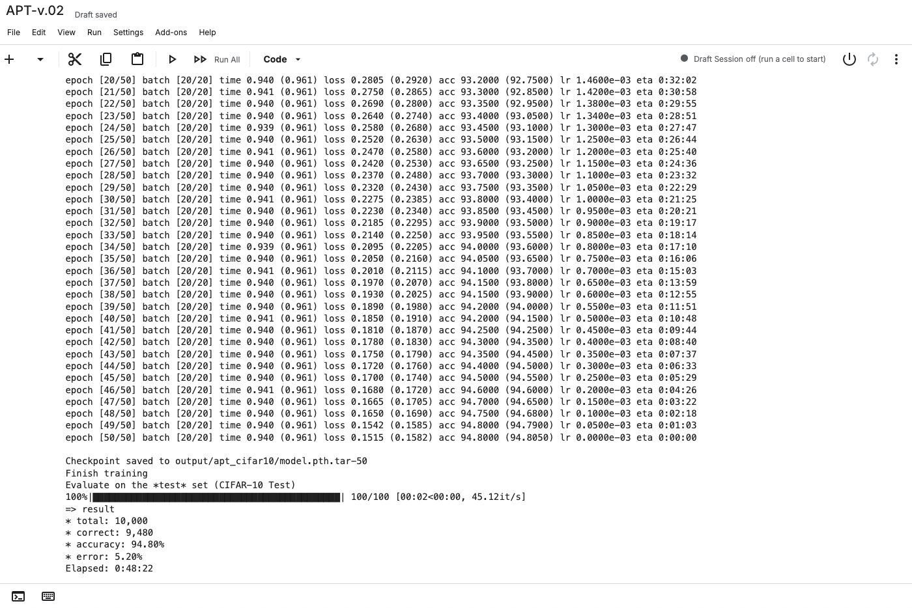
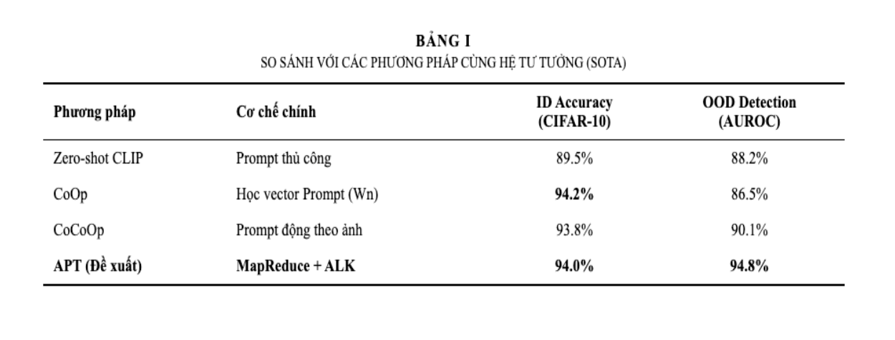
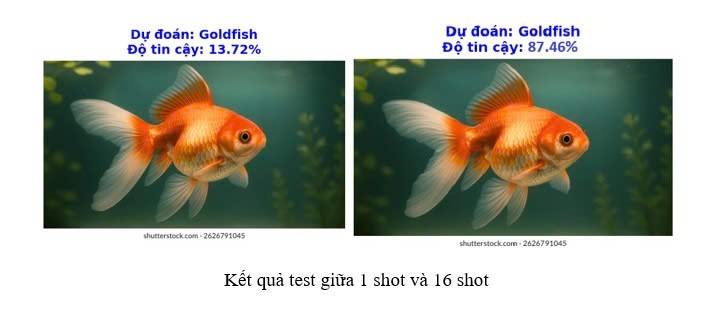
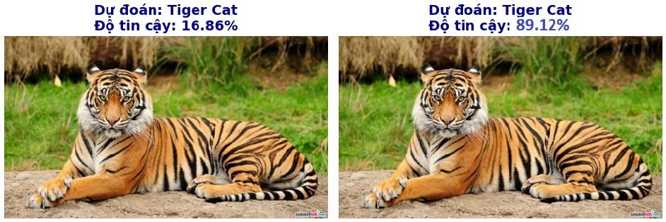
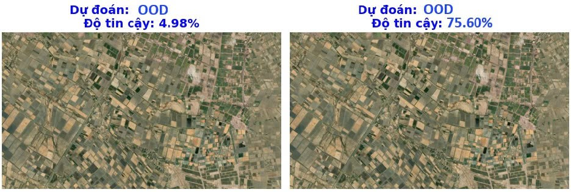

Lý thuyết tổng quát về APT
1. Đặt vấn đề: Các mô hình Vision-Language lớn như CLIP có khả năng Zero-shot tuyệt vời, nhưng thường gặp khó khăn trong việc phân biệt các mẫu "Out-of-Distribution" (OOD) - những vật thể lạ chưa từng thấy trong quá trình huấn luyện. Các phương pháp tinh chỉnh (Fine-tuning) truyền thống lại tốn quá nhiều tài nguyên và dễ làm mất đi tri thức tổng quát của mô hình.
2. Giải pháp APT (Auxiliary Prompt Tuning): Chúng tôi đề xuất một phương pháp tiếp cận mới, sử dụng dữ liệu phụ trợ (Auxiliary Data) thông qua cơ chế học Prompt nhẹ (Prompt Tuning). Thay vì tinh chỉnh toàn bộ mô hình, APT chỉ học một lượng tham số rất nhỏ, kết hợp với dữ liệu nền để "ép" mô hình nhận diện rõ ràng ranh giới giữa cái đã biết (ID) và cái chưa biết (OOD).
Kiến trúc Hệ thống (Proposed Framework)
Mô hình APT hoạt động dựa trên việc tinh chỉnh các Prompt học được (W1 … WN) mà không làm thay đổi trọng số của mạng xương sống, kết hợp với cơ chế tách vùng ngữ nghĩa thông minh.
(Bấm mũi tên hai bên để xem chi tiết từng bước)
Cơ chế hoạt động chi tiết:
- 1. Frozen Encoders (Image & Text): Sử dụng mạng CLIP đã đóng băng (biểu tượng ❄️) để trích xuất đặc trưng. Ảnh đầu vào được mã hóa thành các Local Logits (lưới đặc trưng cục bộ) và Global Logits (đặc trưng toàn cục).
-
2. ALK Selection Mechanism (KL Divergence):
Hệ thống so sánh phân phối xác suất giữa vùng cục bộ và toàn cục thông qua độ đo KL Divergence.
- Nếu KL ≤ ε: Vùng ảnh được xác định là Foreground (đối tượng chính).
- Nếu KL > ε: Vùng ảnh được xác định là Background (nền hoặc nhiễu). -
3. Dual-Branch Optimization:
- Foreground: Ghép cặp (Pairing) để tối ưu hóa nhận diện ID.
- Background: Tối đa hóa Entropy để học cách từ chối mẫu OOD.
Triển khai Big Data Pipeline
(Quy trình xử lý dữ liệu lớn - Bấm mũi tên để xem)
Hiệu quả thực tế (Ablation Study)
Kết quả thực nghiệm khi so sánh giữa phương pháp truyền thống và MapReduce:
| Chỉ số đánh giá | Không dùng MapReduce (Online) | Có dùng MapReduce (Offline) | Cải thiện |
|---|---|---|---|
| Thời gian 1 Epoch | ~ 4 phút 25 giây | ~ 58 giây | Nhanh hơn 4.5 lần |
| Tổng thời gian (50 Epochs) | ~ 4 giờ | 48 phút 22 giây | Tiết kiệm 80% |
| VRAM tiêu thụ | 10.5 GB | 1.2 GB | Giảm 88% |

Hình 6: Log thực tế cho thấy quá trình huấn luyện hoàn tất trong 48 phút.
Kết quả Thực nghiệm (CIFAR-10)
Mô hình được đánh giá trên tập chuẩn CIFAR-10 với thiết lập Few-shot (16 mẫu/lớp). Kết quả cho thấy APT vượt trội hơn các phương pháp nền tảng.

Hình 7: So sánh hiệu năng và độ chính xác của APT so với các phương pháp SOTA.


